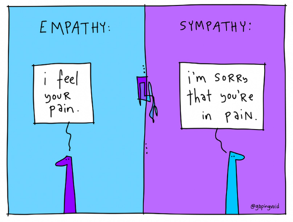
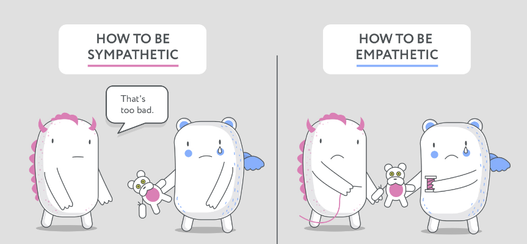
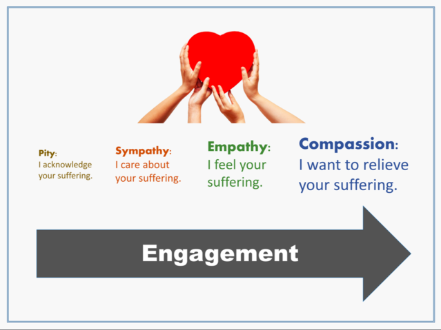

chapter7.2--handout
Background Information
sympathy vs empathy（同情与共情）
这一小节当中卡叔提到了telephone representative和Dermer很好的listening方式及最后的成果，在listening过程中所表达出来的sympathy是蛮关键的一环，在人的情感中，有sympathy和empathy两种，给大家分享一下它们的区别：

💧Sympathy指心理上的同情，相当于是I'm sorry that you're in pain. 比如说一个男孩子不会知道女人生宝宝有多么的痛苦，当他看到一个宝宝降临的过程很痛的时候，他的感受只能说是sympathy——同情心。（当然做过分娩体验的男孩子另说，有兴趣可以尝试哈哈）
💧而Empathy是心理学中的共情，just like I can literally feel your pain, because I have had the same experience. 比如麻麻看到女儿生宝宝的场景，会联想到自己之前的经历，能够切身感受到一样的体验，这种感觉就是empathy——同理心。
比起卡叔的年代，sympathy在今天表达的意思中稍微有点变化：
💧sympathy有时会伪装成at least句式，比如：
－I think my marriage is falling apart.
－我觉得我的婚姻正在破裂。
－At least you have a marriage.
－至少你还有段婚姻啊。
（这种你说我好难过啊我怎么办的时候跳出来和你比惨的情商不在线的家伙有没有分分钟想抽死他...）
💧相比起来，empathy的人就会温暖很多，他们会说：
I don't even know what to say right now. I'm just so glad you told me.
虽然我不知道现在说什么好，但我真的很高兴你能告诉我。
Thank you for sharing with me. If there is anything I can do for you, PLEASE just tell me.
感激你和我分享，有什么我可以帮助你的，尽管和我讲。

针对不同人的痛苦，我们可以有不同的方式去帮助对方，希望大家可以都做一个正能量小太阳，带给身边的人温暖哦！

public service commission (PSC)
美国的PSC（公共服务委员会）是一个政府机关，也叫做public utilities commission (PUC)，负责公共服务的体系，包括electric, gas, water, and telecommunication（电力、燃气、供水、电信等），美国50个州加1个特区（Washington,D.C.）都有自己的PSC，政策也不大相同。
Vocabulary
irate
💧adj. angry，furious
形容词：愤怒的
💧The owner was so irate he almost threw me out of the place.
主人那么生气，他差点儿把我从那个地方赶出去。
dilate
💧v. when things such as blood vessels or the pupils of your eyes dilate or when something dilates them, they become wider or bigger.
动词：扩大
💧The balloon will dilate with air.
气球充气将会膨胀。
storm
💧v. If you storm into or out of a place, you enter or leave it quickly and noisily, because you are angry.
气冲冲地走
💧After a bit of an argument, he stormed out.
一次小小的争吵之后，他就气冲冲地走出去。
scrape
💧v. If something scrapes against something else, it rubs against it, making a noise or causing slight damage.
动词：刮擦
💧The car hurtled past us, scraping the wall and screeching to a halt.
那辆汽车从我们身旁疾驰而过，刮擦着墙嘎然停下。
stray
💧adj. you use stray to describe something that exists separated from other similar things.
形容词：离群的
💧An 8-year-old boy was killed by a stray bullet.
一个8岁的男孩被一颗流弹打死。
Crush Your Problems
- But as soon as he got his feeling of importance from a representative of the company, his imagined grievances vanished into thin air.
💧feeling of importance，还记得前文提到过的人类最渴望被满足的需求之一嘛，被重视感。
e.g. You may achieve a feeling of importance due to the confidence you feel about yourself.
你的存在感来源于你的自信。
💧卡叔用到了imagined grievance描述，体现这种感觉是不真实的，想象出来的委屈。
当你想讽刺某人说的事情是不存在的，根本就是他的幻觉，一个imagined就可以搞定（比如imagined girlfriend）
💧vanish into the air随风而去了，下次当你想用disappear表示消失，不妨试试vanish的说法。
- After getting a number of letters from our credit department, he packed his grip, made a trip to Chicago, and hurried into my office to inform me not only that he was not going to pay that bill, but that he was never going to buy another dollar’s worth of goods from the Detmer Woolen Company.
💧再次分享一组多个动词并列的句子（英文是名词核心，这么用的不多，但是一般都比较有...画面感），packed...made...hurried...inform...一连串的动作，打了个包立马动身去芝加哥，风一样的冲进我的办公室开始正面杠，感觉一个专业杠精就在字里行间开始撕！逼！了！
当你想要去写一个人的系列动作的时候，不妨试试卡叔的这种写法哦～
- His people were so poor that in addition he used to go out in the street with a basket every day and collect stray bits of coal that had fallen in the gutter where the coal wagons had delivered fuel.
💧这句话比较复杂，是多个从句的重叠。主句是：His people were so poor that…,（因为家境如此贫寒，所以……），“so… that…”也是大家比较熟悉的一个固定搭配，“如此……以至于”的意思，表示程度之深。
that后面引导的从句中，in addition”是“而且，额外”的意思，是指除了上一句当中提到的擦玻璃之外，还要做的工作。在从句中出现了两个定语从句，一个是coal that had fallen in the gutter, 先行词是coal（煤炭），引导词是“that”修饰“coal”，意思为“掉在水沟里的煤炭”。第二个定语从句是“gutter where the coal wagons had delivered fuel”，先行词是“gutter”（水沟），引导词是“where”，修饰“gutter”，意思为“煤车运煤经过的水沟”。因为gutter是一个表示位置、地点的词，所以用where作先行词。
Content Analysis
上一个小节，卡叔告诉我们做一个good listener是很重要的，不论是日常人际交流，还是销售人员与客户的沟通，我们都应该学会聆听。
今天的内容中，卡叔再次强调，耐心倾听，再吹毛求疵的人也会变得和善。吹毛求疵的人希望获得重视的感觉，而倾听可以满足他们的需求，令其不满烟消云散。（As soon as he got his feeling of importance from a representative of the company, his imagined grievances vanished into thin air.）纽约电话公司调解员应对一位难缠客户时，多次拜访听取其意见并表示同情，最终客户付清了欠款。这再次说明了有效沟通的重要性。
达特曼先生（Mr. Detmer）的故事也体现了这一点。一位客户气势汹汹的冲进他办公室，认为他公司的财务有问题，并表示以后不会从该公司进货。达特曼先生耐心地听着（I listened patiently to all he had to say），心平气和地表达对对方的理解，认为错误在自己公司，并向他推荐了几个羊毛厂家。最后，他们成为了朋友，合作20多年。
随后，作者讲述了美国最年轻有为的杂志编辑爱德华•波克（Edward Bok）的成功秘诀。爱德华家境贫寒，小小年纪就要打工养家。虽然早早辍学，但他从未放弃学习（he didn’t for one moment give up the idea of an education. Instead, he started to educate himself），至于他是如何开始成功的，自然是源于本章提到的秘诀：listening.
Today's Bonus
今天我们学到了listening和sympathy的重要性，所以今日份彩蛋给大家分享一些useful way to show your grumble or compassion！
How to complain effectively?
💧Would/Do you mind not doing it？语气听起来蛮温和的吼，您介不介意别...，其实内心可以说是略不耐烦...（你丫能不能别那么得瑟...的即视感）
💧Do you have to act like that? 你非得那么做吗？
💧it's so far from what I expected. 离我想要的tei远了也...
💧I am not getting what I was promised. 当时说好的可不是这个样子
那么...说够了抱怨，我们该如何表示同情/同理心呢？
How to express your compassion?
💧I’m sorry to hear that. 听到这事我很难过/抱歉（标准模板句）
💧What a pity/ shame.(shame在这里是遗憾、倒霉的事） 好遗憾。
💧It must be tough for you. 那你肯定很难受吧。
💧I know how you feel. 我理解你的感受。
背景知识中提到了美国的州，你知道每个州都有自己的state motto吗？下面分享几个有趣的motto给大家，要正能量哦～
💧New York：Excelsior (Ever upward)
💧New Jersey：Liberty and prosperity（自由且繁荣）
💧New Hampshire：Live Free or Die（类似于Give me liberty or give me death不自由毋宁死）
💧Ohio：With God, all things are possible
💧North Carolina：Esse quam videri (To be, rather than to seem)
💧Kansas：Ad astra per aspera (To the stars through difficulties)
💧Kentucky：United we stand, divided we fall